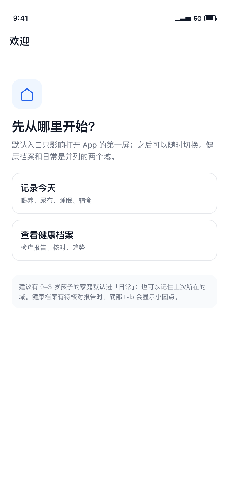
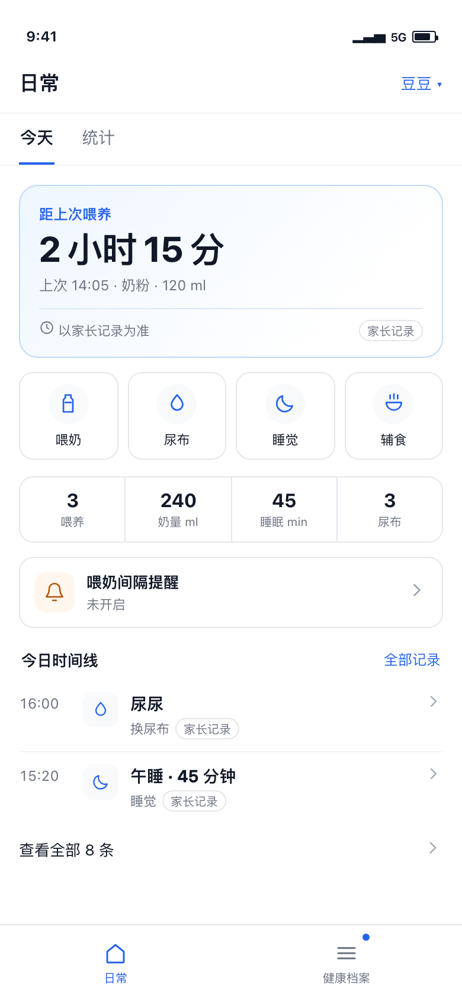
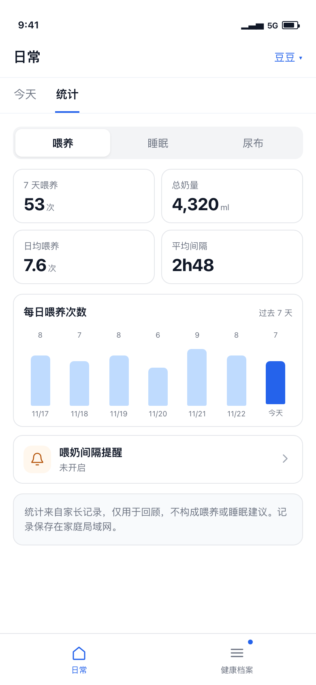
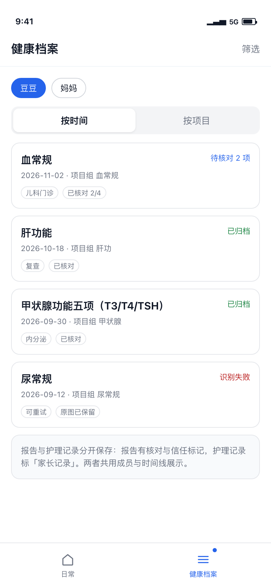
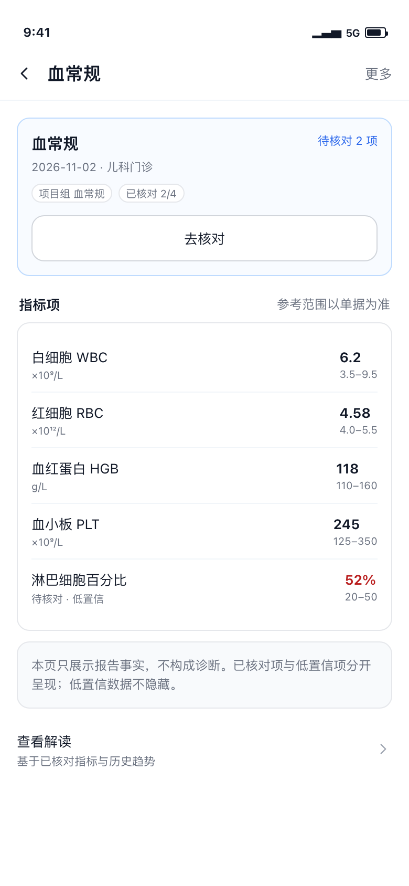
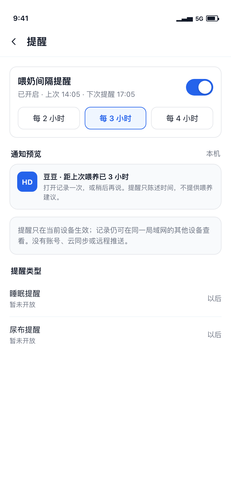

首次启动 · 选默认入口
首次打开可以让家长选「记录今天 / 查看健康档案」；之后记住上次所在的域，不强制永远落在今天。
一级只放两个并列域：日常 与 健康档案。日常内部再分 今天 / 统计； 默认进「日常 > 今天」，健康档案一触可达。首屏不再需要把「今天 / 统计 / 档案」三个视图平铺。

首次打开可以让家长选「记录今天 / 查看健康档案」；之后记住上次所在的域，不强制永远落在今天。

一级 tab 是「日常 / 健康档案」；日常内部用「今天 / 统计」二级切换。记录动作留在今天页。

统计是日常内部的二级视图，不再和健康档案抢一级位置；喂养 / 睡眠 / 尿布切换。

报告、核对、识别失败重试是另一个一级域；底部 tab 有待核对小圆点，报告不会被日常记录淹没。

从健康档案进入报告详情；报告与护理记录分开保存，来源与核对状态仍然可见。

提醒从日常首页卡片进入；只在本机、可选、默认关闭，不承诺准时。
可以，但不必写死。首次启动让用户选默认入口；之后记住上次所在的域。高频记录家庭落日常，报告驱动家庭落健康档案。
可行，而且比 B1 的平铺三 tab 更干净：一级域两个，二级视图两个；最多两层。记录不是 tab，是今天页上的动作。
因为后面还会有尿布、睡眠、辅食；「喂养」只是日常里的一个动作。一级域名要能容纳整个护理域，否则很快就要改名。